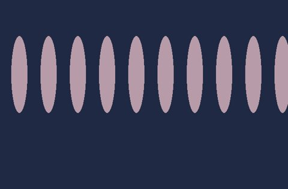
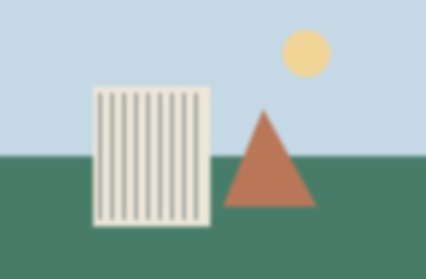

blue.png
Review order 1 · 640 × 420
Sharpness 0.00000 · dark 0.0% · bright 0.0%
Similar images, grouped for comparison. Review order uses a sharpness baseline, not a learned preference or an artistic-quality score. No originals are changed.
7 images · 4 groups
Review order 1 · 640 × 420
Sharpness 0.00000 · dark 0.0% · bright 0.0%

Review order 1 · 640 × 420
Sharpness 0.00937 · dark 0.0% · bright 0.0%
Review order 1 · 640 × 420
Sharpness 0.00000 · dark 0.0% · bright 0.0%
Review order 1 · 640 × 420
Sharpness 0.00862 · dark 0.0% · bright 0.0%
Review order 2 · 640 × 420
Sharpness 0.00850 · dark 0.0% · bright 0.0%
Review order 3 · 640 × 420
Sharpness 0.00850 · dark 0.0% · bright 0.0%

Review order 4 · 640 × 420
Sharpness 0.00002 · dark 0.0% · bright 0.0%